ВЕДОМСТВЕННЫЕ СТРОИТЕЛЬНЫЕ НОРМЫ
ОМОНОЛИЧИВАНИЕ
СТЫКОВ
ЭЛЕМЕНТОВ СБОРНЫХ КОНСТРУКЦИЙ
ПОДЗЕМНЫХ СООРУЖЕНИЙ
ВСН 488-86
Минмонтажспецстрой СССР
МИНИСТЕРСТВО
МОНТАЖНЫХ И СПЕЦИАЛЬНЫХ
СТРОИТЕЛЬНЫХ РАБОТ СССР
Москва 1987
РАЗРАБОТАНЫ Организациями Минмонтажспецстроя СССР: Всесоюзным научно-исследовательским институтом гидромеханизации, санитарно-технических и специальных строительных работ (канд. техн. наук И.Р. Арабаджян); трестом Гидроспецфундаментстрой (В.М. Трубин, А.В. Зеленцов, В.П. Очагов); ЛО ГПИ Фундаментпроект (канд. техн. наук Е.М. Перлей, А.М. Рукавцов, О.Г. Кедров).
ВНЕСЕНЫ Главным техническим управлением Минмонтажспецстроя СССР
ПОДГОТОВЛЕНЫ К УТВЕРЖДЕНИЮ Отделом норм и стандартов Главного технического управления Минмонтажспецстроя СССР
|
Министерство монтажных и специальных строительных работ СССР (Минмонтажспецстрой СССР) |
Ведомственные строительные нормы |
ВСН 488-86 |
|
Минмонтажспецстрой СССР |
||
|
Омоноличивание стыков элементов сборных конструкций подземных сооружений |
Впервые |
1.1.1. Инструкция предназначена для применения при возведении подземных сооружений из сборных бетонных и железобетонных элементов способом "стена в грунте" (колодцы, резервуары, галереи, переходы и т.п.) в промышленном и гражданском строительстве, когда монтаж элементов и омоноличивание стыков осуществляется в траншеях, заполненных глинистым раствором или водой, в сухих траншеях, а также на дневной поверхности с последующим опусканием сооружения в грунт или в предварительно отрытых котлованах, засыпаемых с наружной стороны грунтом.
1.1.2. Разработанная технология омоноличивания применима для стыков прямоугольного сечения шпоночного (неармированного) и открытого (армированного) типов. Омоноличивание вибронабивным способом допустимо только для неармированных стыков закрытого типа.
1.1.3. Работы по омоноличиванию стыков в траншеях под глинистым раствором или водой допускаются при температуре окружающей среды (глинистого раствора, воды) не ниже +5 °С.
1.1.4. Омоноличивание стыков на дневной поверхности или в сухих траншеях при отрицательной температуре воздуха следует производить согласно "Руководству по применению бетонов с противоморозными добавками". - М.: Стройиздат, 1978.
1.1.5. Омоноличивание стыков путем инъекции цементных или цементно-песчаных растворов рекомендуется производить при любых раскрытиях стыка (шва), если не представляется возможным качественно заполнить и уплотнить полость стыка бетоном, например, при значительном насыщении стыка арматурой.
|
Внесены Главным техническим управлением Минмонтажспецстроя СССР |
Утверждены Минмонтажспецстроем СССР 10 ноября 1986 г. |
Срок введения в действие 1 июля 1987 г. |
1.1.6. Работы по омоноличиванию стыков следует выполнять с соблюдением требований, изложенных в настоящей инструкции и разделе 5 СНиП III-16-80.
1.2.1. Для приготовления бетонов и инъекционных цементных и цементно-песчаных растворов следует использовать следующие материалы:
портландцемент марки не ниже 400 и его разновидности (ГОСТ 10178-76*, ГОСТ 22266-76);
напрягающий цемент НЦ-10 марки не ниже 400 с пониженной энергией самонапряжения (ТУ 21-20-18-83);
песок для строительных работ с модулем крупности не более 3,0 (ГОСТ 8736-77*). Для приготовления инъекционных растворов модуль крупности песка должен быть не более 2,0, максимальная крупность зерен 2,5 мм;
гравий для строительных работ фракций 5-10 или 5-20 мм (ГОСТ 8268-82);
щебень из естественного камня или гравия фракций 5-10 или 5-20 мм (ГОСТ 8267-82 и ГОСТ 10260-82);
пластифицирующую добавку СДБ (сульфитно-дрожжевая бражка, ОСТ 81-79-74) или другую в соответствии с "Руководством по применению химических добавок в бетоне". - М.: Стройиздат, 1980 (приложение 1 настоящих ВСН, обязательное);
суперпластификатор С-3 (разжижающая добавка), соответствующий требованиям ТУ 14-6-188-81 (приложение 2, рекомендуемое).
1.8. Вид и состав вяжущего в зависимости от условий эксплуатации сооружения и агрессивности среды назначаются в соответствии со СНиП 2.03.11-85.
1.3. Подготовительные работы
1.3.1. Перед установкой сборные элементы должны быть очищены от грязи, продуты сжатым воздухом или промыты.
1.3.2. Для снятия карбонатной пленки и создания шероховатости стыкуемые поверхности необходимо обработать металлическими щетками или гидропескоструйным аппаратом согласно СНиП III-15-76.
1.3.3. При использовании растворов и бетонов на активированных цементах обработка стыкуемых поверхностей исключается.
1.3.4. Перед началом работ по омоноличиванию на дневной поверхности или в сухих траншеях стыкуемые поверхности следует обильно смочить водой.
1.3.5. После установки и монтажа на дневной поверхности элементов сборных конструкций подземных сооружений омоноличиваемая полость должна быть ограждена деревянной или металлической опалубкой.
1.3.6. При омоноличивании стыков под глинистым раствором сборные элементы перед погружением в глинистый раствор, заполняющий грунтовую выработку, должны быть насыщены водой. Насыщение следует производить в специально устраиваемых углублениях в грунте (емкостях), или интенсивным поливом. Время водонасыщения элементов толщиной 40-60 см составляет 2-3 ч.
Изоляция полости
стыка конструкции ГПИ Фундаментпроект,
треста Гидроспецфундаментстрой и ВНИИГС
Черт. 1
1 - стеновая панель; 2 - доски, ограждающие стык; 3 - направляющие ограждающего устройства; 4 - глинистый раствор
1.3.7. Если стыки имеют арматурные выпуски, то при омоноличивании под глинистым раствором плоскость стыка ограждают деревянными досками или металлическими листами. Их закладывают в пазы, предусмотренные проектом в элементах сборных конструкций (черт. 1). Если арматурные выпуски отсутствуют, то стык ограждают с помощью пакета из двух досок, соединяемых друг с другом проволокой диаметром 6-10 мм через 0,5 м, установку которого рекомендуется производить специальным устройством (черт. 2). После установки опалубки необходимо одну из досок опалубки досадить ударами. Создающийся при этом перекос стягивающих проволок способствует плотному прижатию досок к бетону и изоляции полости стыка.
1.3.8. Установленные в проектное положение панели фиксируют нагнетанием в их основание цементно-песчаного раствора. Высота слоя нагнетаемого раствора должна быть не выше отметки низа днища сооружения при обязательном перекрытии низа опалубки, изолирующей стык, на 15-20 см. Этим достигается полная изоляция полости стыка от внешней среды.
1.3.9. Если предварительное водонасыщение бетона невозможно, то для снятия с контактных поверхностей бетона глинистой корки непосредственно перед омоноличиванием изолированная полость стыка должна быть промыта водой при одновременной подаче в стык воздуха с помощью металлических штанг, погружаемых в стык. К омоноличиванию можно приступать после того, как плотность глинистого раствора в полости доведена до 1,02 г/см3.
Инвентарное приспособление конструкции треста Гидроспецфундаментстрой для изоляции полости стыка при омоноличивании методом инъекции под глинистым раствором
Черт. 2
1 - доски ограждения; 2 - затяжные винты; 3 - стяжки из проволоки диаметром 6-10 мм; 4 - площадочный вибратор
2.1.1. Подбор состава бетонной смеси в соответствии с положениями раздела 5 СНиП III-16-80 производят любым из существующих способов с обязательным обеспечением нерасслаиваемости при вибрировании (приложение 3 настоящих ВСН, справочное).
2.1.2. Бетонные смеси на щебне следует приготовлять на песке с МК < 2,5, а на гравии с МК > 2,5.
2.1.3. Бетонные смеси следует приготовлять с обязательным введением пластифицирующей гидрофилизующей добавки СДБ в количестве 0,1-0,2 % массы цемента (см. приложение 1, обязательное) в зависимости от вида цемента, тонкости помола, вида и количества наполнителей.
2.1.4. Бетонные смеси должны обладать осадкой стандартного конуса 3-6 см и жесткостью не более 5 с (ГОСТ 10181.1-81).
2.1.5. Для приготовления бетонных смесей можно использовать бетоносмесители гравитационного типа или принудительного перемешивания и скоростные турбулентные смесители.
2.1.6. Для придания бетонным смесям высокой подвижности, а также для повышения прочности и водонепроницаемости в смеси рекомендуется вводить суперпластификатор С-3 в соответствии с "Рекомендациями по применению суперпластификатора С-3 в бетоне". - М., НИИЖБ, 1979.
2.1.7. В бетонную смесь вводят суперпластификатор С-3 с водой затворения в количестве 0,2-1,2 % массы цемента в пересчете на сухое вещество. Окончательный состав бетона устанавливает строительная лаборатория.
2.1.8. Для снижения усадочных деформаций, обеспечения более плотной структуры бетона и раствора и увеличения прочности сцепления в качестве вяжущего может быть использован напрягающий цемент НЦ-10 согласно "Инструкции по герметизации и механизированному замоноличиванию стыков между сборными элементами железобетонных емкостных сооружений" № 036789, утвержденной Техническим управлением Главленоргинжстроя в 1984 г. Особенно эффективен напрягающий цемент НЦ-10 в сочетании с суперпластификатором С-3.
2.1.9. Приготовление и использование бетонов и растворов на напрягающем цементе НЦ-10 для омоноличивания стыков без введения замедлителей схватывания не допускается.
2.1.10. При приготовлении бетона в скоростных турбулентных смесителях СБ-43 (С-868), СБ-108 и СБ-81 (приложение 4, рекомендуемое) достигаются активация цемента и высокая однородность смеси.
2.1.11. Порядок загрузки материалов в турбулентные смесители следующий: сначала заливают воду, содержащую расчетное количество пластифицирующей добавки; затем при включенном роторе засыпают цемент. Полученный раствор 1-2 мин перемешивают, засыпают песок и крупный заполнитель, после чего бетонную смесь перемешивают еще 1 мин.
2.1.12. Оптимальное время перемешивания цементно-водной суспензии зависит от вида цемента, минералогического состава его клинкера, тонкости помола и т.д. Время перемешивания растворов на высокоалюминатных цементах 1-2 мин, на низкоалюминатных (содержание С3А меньше 4 %) и напрягающем цементе НЦ-01 - 2-3 мин.
2.1.13. Общее время перемешивания бетонной смеси в скоростных смесителях не должно превышать 4 мин.
2.1.14. Бетонная смесь может быть приготовлена также по следующей схеме: в скоростном смесителе типа С-868 приготовляют цементно-песчаный раствор, который затем выгружают в бетоносмесительную установку гравитационного или принудительного перемешивания, где раствор смешивается с крупным заполнителем.
2.2.1. Для укладки и уплотнения бетона следует использовать:
при вертикальном стыке высотой не более 2 м, а также горизонтальном - вибраторы глубинного уплотнения бетона: вибробулавы ИВ-59 и ИВ-79, вибраторы с гибким валом ИВ-47А, ИВ-66 и ИВ-67 или пневматические вибраторы ИВ-13, ИВ-14 и ИВ-15 (приложение 5, рекомендуемое);
при высоте стыка 2 - 12 м - бетонолитную трубу диаметром не более 127 мм, на верхнем конце которой имеется приемная воронка, а на нижнем закреплен вибратор ИВ-79 (или ИВ-47) (черт. 3). Бетонолитную трубу рекомендуется изготовлять из труб колонкового бурения, соединяемых с помощью ниппелей или труба в трубу (приложение 6, рекомендуемое). Диаметр бетонолитной трубы в каждом конкретном случае зависит от конфигурации и ширины стыка, значение которой в средней части должно быть не менее 20 см.
2.3.1. При высоте стыка до 2 м заполнение и уплотнение бетонной смеси производят в таком порядке: в полость стыка опускают вибратор и начинают заполнять стык бетонной смесью. Когда уровень бетонной смеси достигнет 1 м, включают вибратор и начинают его медленно извлекать с попеременным осаживанием до первоначальной отметки с таким расчетом, чтобы участок оказался провибрированным в течение 20-30 с. После 20-30-минутного перерыва вибрирование бетонной смеси в стыке повторяют. Затем стык доверху заполняют бетонной смесью и вибрируют аналогичным образом. Для бетонных смесей, содержащих добавку С-3, достаточно однократное вибрирование.
Вариант крепления вибратора ИВ-79 к бетонолитной трубе
Черт. 3
1 - бетонолитная труба диаметром 127 мм из труб колонкового бурения; 2 - вибратор; 3 - отрезок трубы колонкового бурения диаметрам 89 мм с резьбой; 4 - упорный стакан; 5 - нажимная гайка
2.3.2. При высоте стыка до 12 м подачу и уплотнение бетонной смеси осуществляют с помощью бетонолитной трубы, опущенной в полость стыка (черт. 4). После заполнения трубы и приемной воронки бетонной смесью включают вибратор и с помощью крана трубу приподнимают на 10-20 см. Когда поступление бетона в стык прекращается, бетонолитную трубу начинают приподнимать с попеременным осаживанием, но с таким расчетом, чтобы заглубление нижнего конца бетонолитной трубы в бетон было не менее 0,5 м. После того, как уровень бетона над дном составит 5-6 м, звенья трубы отсоединяют и продолжают заполнение стыка.
Омоноличивание стыка с помощью бетонолитной трубы
Черт. 4
1 - направляющие кондуктора; 2 - вибратор; 3 - доски, ограждающие стык; 4 - стеновая панель; 5 -бетонолитная труба; 6 - глинистый раствор; 7 - направляющие ограждающего устройства
2.3.3. Горизонтальные стыки омоноличивают двумя способами (черт. 5):
а) при высоте раскрытия шва до 6 см - инъекцией цементного раствора через отверстия в опалубке для ограждения шва с помощью инъектора с резиновыми уплотнителями;
б) при высоте раскрытия 6 - 20 см и выше - бетонными смесями с помощью специального (инвентарного) лотка, закрепляемого на панели с таким расчетом, чтобы верхний край лотка был на 10 см выше нижнего обреза верхней панели. С остальных сторон шов должен быть изолирован. Подачу и уплотнение бетонной смеси следует осуществлять вибрированием. В процессе бетонирования (омоноличивания) уровень бетонной смеси в лотке необходимо поддерживать постоянным и производить непрерывное вибрирование;
в) при отсутствии арматурных выпусков наращивание элементов можно производить также путем установки верхнего элемента на слой цементного или цементно-песчаного раствора, наносимого на стыкуемую поверхность нижнего элемента. Омоноличивание горизонтальных швов производят в первую очередь.
2.3.4. Непосредственно перед омоноличиванием швов (стыков) необходимо:
очистить стыкуемые поверхности от грязи и мусора и продуть сжатым воздухом;
проверить надежность и плотность примыкания установленной опалубки:
увлажнить сухие поверхности, не допуская застаивания воды.
Схема омоноличивания горизонтальных стыков
Черт. 5
а - при раскрытии шва свыше 6 см; б - при раскрытии шва менее 6 см; 1 - инъекционная трубка; 2 -опалубка; 3 - инъекционный цементный или цементно-песчаный раствор; 4 - стеновая панель; 5 - вибратор; 6 - бетон омоноличивания; 7 - металлический лоток
2.3.5. При омоноличивании стыков под глинистым раствором, чтобы исключить перемешивание раствора с первой порцией бетонной смеси, в горловине бетонолитной трубы подвешивают стальную скользящую пробку (черт. 6). После того, как включен вибратор и приподнята труба, веревку, удерживающую скользящую пробку, перерезают. Последующие операции выполняют согласно п. 2.17. При этом необходимо следить за тем, чтобы нижний конец трубы в процессе омоноличивания постоянно находился в толще уложенной смеси.
2.21. Повторное вибрирование рекомендуется производить при использовании бетонных смесей на цементах заводского помола. Для бетонных смесей на активированном или напрягающем цементах достаточно уплотнения только однократным вибрированием.
Конструкция стальной скользящей пробки и схема ее установки
Черт. 6
а - конструкция; б - схема установки; 1 - листовая резина; 2 - направляющие дужки; 3 - пробка; 4 - подвес пробки; 5 - бетон; L - глубина установки пробки - не менее диаметра трубы.
3.1.1. Для приготовления инъекционных цементно-песчаных растворов рекомендуется использовать скоростные смесители с частотой вращения вала не менее 500 мин-1, например, турбулентные смесители СБ-43 (С-868), СБ-81, СБ-108 (см. приложение 4, рекомендуемое).
3.1.2. Оптимальное время перемешивания раствора в смесителе типа СБ-43 составляет 2 мин.
3.1.3. Порядок приготовления раствора следующий: в смеситель с включенным ротором заливают воду, содержащую расчетное количество пластифицирующей добавки СДБ (или другой, например С-3); засыпают цемент и раствор перемешивают 1 мин; затем загружают песок и раствор перемешивают еще 1 мин. При использовании напрягающего цемента НЦ-10 общее время перемешивания должно быть не менее 3 мин.
3.1.4. Из смесителя раствор выгружают при включенном роторе через вибросито (приложение 7, справочное) в растворосмеситель с вертикальным валом с частотой вращения 80-100 мин-1, из которого его отбирают насосами для инъекции (черт. 7).
Принципиальная схема узла для приготовления активированного цементного раствора
Черт. 7
1 - смеситель СБ-108; 2 - бак для воды; 3 - бак для СДБ; 4 - вибросито С-422 или С-720; 5 - лоток; 6 - растоворосмеитель СМ-242; 7 - диафрагмовый растворонасос СО-49; 8 - трехходовой кран; 9 - обратный сброс; 10 - скиповый подъемник
3.1.5. Водоцементное отношение инъекционного раствора должно находиться в пределах 0,39-0,41 (водотвердое отношение 0,27-0,33) (приложение 8, обязательное; приложение 9, справочное) в зависимости от вида цемента, минералогического состава его клинкера, тонкости помола, вида и количества минеральных добавок. При приготовлении растворов на напрягающем цементе НЦ-10 водоцементное отношение должно быть в пределах 0,45. Состав раствора подбирает строительная лаборатория.
3.1.6. Содержание песка в цементационном растворе для омоноличивания стыков под глинистым раствором не должно превышать 30 % массы цемента.
3.1.7. Водоотделение растворов в мерных цилиндрах вместимостью 250 мл в течение 30 мин не должно превышать 2 % по объему.
3.1.8. Пластичность омоноличивающего раствора по расплыву должна составлять:
а) по конусу АзНИИ - 100-105 мм;
б) по конусу для определения консистенции цементного раствора - 240-245 мм (приложение 10, справочное);
в) по прибору СтройЦНИЛ - 120-130 мм.
3.1.9. Инъекционные цементно-песчаные растворы приготовляют с обязательным введением пластифицирующей добавки СДБ в количестве 0,1-0,2 % массы цемента (см. приложение 1). Оптимальное количество суперпластификатора С-3 находится в пределах 0,3-0,8 % массы цемента в пересчете на сухое вещество.
3.2.1. Для инъекции растворов в стык применяют растворонасосы, работающие с промежуточной жидкостью (приложение 11, справочное).
3.2.2. В качество подводящей арматуры для подачи раствора в стык рекомендуется использовать резиновые магистральные шланги (резиновые рукава) внутренним диаметром 40-63 мм, рабочим давлением 0,63-1,6 МПа (приложение 12, рекомендуемое).
3.2.3. Стыковку магистральных шлангов следует производить с помощью специальных соединительных головок, позволяющих осуществлять быстрый разъем соединений (приложение 13, справочное).
3.2.4. Присоединение магистрального шланга к входному отверстию осуществляется с помощью специальных соединительных головок или инъектора с резиновыми уплотнителями (черт. 8).
3.2.5. На выходе насоса должен быть установлен манометр и трехходовой кран для сброса раствора в растворомешалку при аварийной выходе из строя подающего шланга или резком повышении давления инъекции в результате закупорки магистрального провода (см. черт. 7).
Инъектор с резиновыми уплотнителями
Черт. 8
1 - резиновое кольцо; 2 - нижняя опорная муфта; 3 - муфта; 4 - винтовой домкрат
3.3.1. Инъекция цементно-песчаного раствора в вертикальный стык может производиться:
а) при омоноличивании насухо - через штуцера в ограждении (опалубке) стыка через 3-5 м по высоте;
б) при омоноличивании под глинистым раствором - с помощью резинового шланга (см. приложение 13, справочное), снабженного на конце отрезком металлической трубы, погружаемого до дна полости стыка. По мере заполнения стыка раствором шланг извлекают, но с таким расчетом, чтобы его нижний конец оставался в растворе. Находящийся в полости стыка глинистый раствор вытесняется нагнетаемым раствором.
3.3.2. Начальное давление инъекции не следует принимать более 0,05 МПа. По мере продвижения раствора давление инъекции повышают до расчетного, значение которого должно устанавливаться из условия обеспечения продвижения раствора и заполнения им полости стыка.
3.3.3. Если при достижении расчетного давления продвижения раствора не наблюдается, необходимо произвести ревизию насоса и подводящей арматуры.
3.3.4. После заполнения полости стыка раствором давление инъекции следует поддерживать 10 мин, после чего его сбрасывают, а подводящую арматуру отсоединяют и промывают.
3.3.5. После завершения работ по омоноличиванию стыков и выемке грунта из внутренней полости сооружения следует удалить опалубку, перекрывающую стыки, и поверхность бетона промыть струёй воды. Образовавшиеся пазухи в зоне стыка необходимо заторкретировать.
3.3.6. При омоноличивании на дневной поверхности распалубку стыков и работы по торкретированию разрешается производить не ранее чем через 7 суток после омоноличивания и после достижения бетоном 50 % проектной прочности.
4.1. Перед погружением сборных элементов в глинистый раствор стыкуемые поверхности должны быть очищены от льда.
4.2. После установки элементов в захватку, заполненную глинистым раствором, полости стыков должны быть ограждены опалубкой согласно п. 1.15 настоящей инструкции.
4.3. К промывке стыков следует приступать после оттаивания бетона сборных элементов и уравнивания температуры бетона с температурой окружающей среды (глинистого раствора), но не ниже +5 °С. Далее работы ведут согласно пп. 1.14 и 1.16 настоящей инструкции. Омоноличивание стыка при отрицательной температуре бетона не допускается.
4.4. Омоноличивание стыков следует выполнять с учетом положений раздела 5 СНиП III-16-80.
5.1.1. Разработанная технология предназначена для омоноличивания шпоночных стыков закрытого типа (черт. 9) при строительстве подземных сооружений из сборных элементов насухо (в открытом котловане), под водой и глинистым раствором.
Варианты шпоночных стыков
Черт. 9
а - цилиндрический; б - трапецеидальный; в - треугольный; 1 - сборный железобетонный элемент; 2 - полость стыка, омоноличенная вибронабивным способом
5.1.2. Минимальные размеры полости стыка в плане должны составлять 140 х 140 мм.
5.1.3. Максимальное раскрытие вертикального шва между сборными элементами не должно превышать 40 мм.
5.1.4. Омоноличивание стыков вибронабивным способом допускается производить на глубину до 20 м.
5.2.1. Для приготовления бетонной смеси можно использовать следующие материалы:
а) портландцемент, шлакопортландцемент, пуццолановый портландцемент марки не ниже 400 (ГОСТ 10178-76);
б) гравий для строительных работ фракций свыше 10 до 20 мм или в виде смеси фракций от 5 до 20 мм, удовлетворяющий требованиям ГОСТ 8268-82;
в) щебень из природного камня для строительных работ или щебень из гравия фракций свыше 10 до 20 мм, удовлетворяющий требованиям ГОСТ 8267-82 или ГОСТ 10260-82;
г) песок для строительных работ, удовлетворяющий требованиям ГОСТ 8736-77*, с модулем крупности МК = 1,5-2,5.
5.2.2. Вид и состав вяжущего определяют согласно п. 1.8 настоящей инструкции.
5.3.1. Малоподвижная бетонная смесь для омоноличивания стыков вибронабивным способом, приготовленная на гравии или щебне, должна иметь осадку конуса в пределах 7-9 см (ГОСТ 10181.0-81).
5.3.2. Бетонные смеси на щебне следует готовить с применением песка с МК = 1,5-2,0, а при использовании в качестве крупного заполнителя гравия - МК = 2,0-2,5.
5.3.3. При отсутствии песка с МК = 1,5-2,5 для приготовления бетонной смеси на щебне могут быть использованы пески с модулем крупности свыше 2,5.
5.4.1. Состав бетонной смеси должен подбирать завод-изготовитель согласно пп. 5.5-5.9 с учетом технических требований заказчика к проектной марке бетона, водонепроницаемости и морозостойкости при наименьшем расходе цемента.
5.4.2. Вода для приготовления бетонной смеси должна удовлетворять требованиям ГОСТ 23732-79.
5.4.3. Бетонную смесь следует приготовлять в смесителях циклического или непрерывного действия, соответствующих требованиям ГОСТ 6508-81 и ТУ 22-3513-76, ТУ 22-3514-76.
5.4.4. Транспортные средства для доставки бетонной смеси на строительную площадку должны обеспечивать сохранность ее свойств, исключать потери цементного молока и самой смеси (ГОСТ 7473-76).
5.4.5. В производственных условиях, непосредственно на месте укладки бетонной смеси, строительная лаборатория должна вести контроль качества доставляемой бетонной смеси путем отбора проб согласно ГОСТ 10181.0-81.
5.5.1. Оборудование для омоноличивания стыков бетонной смесью вибронабивным способом включает:
а) металлические бетонолитные трубы для подачи бетонной смеси в полости стыков;
б) приемный бункер с лотком, закрепляемый на бетонолитной трубе;
в) вибропогружатель, закрепляемый на приемном бункере;
г) металлическую площадку для обслуживания вибропогружателя и заполнения приемного бункера бетонной смесью.
5.5.2. Для подачи бетонной смеси под воду или глинистый раствор следует использовать бесшовные горячедеформированные стальные трубы (ГОСТ 8732-78) диаметром 127-273 мм, с толщиной стенки 12-18 мм (приложение 14, рекомендуемое) и длиной
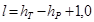
где hT - глубина траншеи, м;
hP - высота слоя раствора (п. 5.23), м.
5.5.3. Инвентарная бетонолитная труба (черт. 10) снабжена фланцем для жесткого соединения с приемным бункером.
5.5.4. При отсутствии трубы необходимой длины или при глубине омоноличивания свыше 12 м допускается ее изготовление из двух звеньев с жестким (на сварке) и водонепроницаемым соединением.
5.5.5. Для заполнения бетонолитных труб бетонной смесью служит приемный бункер с лотком общим объемом 1,5 м3 (черт. 11). Внутри бункера имеется труба диаметром 325-477 мм с опорным столиком в верхней части и двумя технологическими окнами размерами 160 х 550 мм, пропускающими бетонную смесь в бетонолитную трубу при включенном вибропогружателе. К опорному столику жестко прикреплен вибропогружатель.
5.5.6. Омоноличивание вибронабивным способом выполняется с помощью вибропогружателя ВПП-2 или В-401 (приложение 15, рекомендуемое), закрепляемого болтами на опорном столике приемного бункера.
Бетонирование стыков ведется до окончания процесса омоноличивания при постоянно включенном вибропогружателе.
5.5.7. Для заполнения приемного бункера бетонной смесью, закрепления и обслуживания вибропогружателя следует применять металлическую площадку (черт. 12) в виде сварного помоста на салазках. Площадку следует устанавливать в зоне бетонируемых стыков.
5.5.8. Бетонную смесь в приемный бункер подают бадьями или из автобетоновозов.
5.6.1. До начала бетонирования стыков под водой или глинистым раствором под сборные элементы необходимо подать путем нагнетания цементно-песчаный раствор согласно п. 1.16 настоящей инструкции.
Инвентарная бетонолитная труба:
Черт. 10
1 - труба стальная бесшовная с толщиной стенки 12-18 мм; 2 - фланец; 3 - ребро
Слой раствора должен иметь высоту
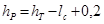
где hT - глубина траншеи, м;
lc - длина сборного элемента, м.
5.6.2. Перед бетонированием бетонолитную трубу устанавливают в полость стыка (черт. 12) и опирают на ранее уложенный на дно траншеи цементно-песчаный раствор.
Приемный бункер с лотком
Черт. 11
1 - бункер; 2 - опорный столик; 3 - лоток; 4 - труба диаметром 325 мм; 5 - приемное окно
Технология бетонирования стыков вибронабивным способом:
Черт. 12
1 - траншея под глинистым раствором; 2 - сборный железобетонный элемент; 3 - инвентарная бетонолитная труба; 4 - слой цементно-песчаного раствора; 5 - площадка; 6 - приемный бункер с лотком; 7 - вибропогружатель ВПП-2 (В401); 8 - труба диаметром 325 мм; 9 - приемные окна; 10 - бетонная смесь с ОК = 7-9 см
5.6.3. Процесс омоноличивания начинают с загрузки приемного бункера бетонной смесью и закрепления на ней вибропогружателя с последующим соединением бункера с бетонолитной трубой.
5.6.4. После включения вибропогружателя бетонная смесь заполняет бетонолитную трубу. Трубу приподнимают над уровнем цементно-песчаного раствора и бетонная смесь поступает в полость стыка.
5.6.5. При заполнении полости стыка на 1,5-2,0 м бетонолитную трубу с включенным вибратором поднимают со скоростью 1,0-1,5 м/мин, а через каждый метр опускают на 20-30 см для утрамбовывания смеси.
5.6.6. По окончании омоноличивания вибропогружатель отключают, трубу извлекают и опускают в полость очередного стыка. Бункер с вибропогружателем отсоединяют и устанавливают на металлическую площадку для заполнения бетонной смесью.
5.6.7. При возникновении вынужденных перерывов между бетонированием отдельных стыков и по окончании омоноличивания бетонолитную трубу и бункер необходимо тщательно промыть водой.
6.1. При проведении работ по омоноличиванию стыков должен осуществляться контроль за качеством бетона (раствора) и соответствием его физико-механических характеристик требованиям проекта.
6.2. Характеристики бетонной смеси проверяют определением осадки конуса и жесткости по ГОСТ 10181.1-81.
6.3. Прочность бетона при сжатии следует проверять на двух сериях контрольных образцов размерами 150 х 150 х 150 мм в возрасте 7 и 28 сут., изготовленных из бетонной смеси на бетонно-растворном узле и непосредственно на строительной площадке.
6.4. Контрольные образцы, изготовленные на бетонном заводе, до испытаний должны храниться в камере нормального хранения, а изготовленные на строительной площадке - в условиях твердения конструкции.
6.5. При омоноличивании стыков на дневной поверхности в летнее и особенно жаркое время, чтобы поддержать благоприятный режим твердения бетона и предотвратить значительные температурно-усадочные деформации, деревянную опалубку стыка и примыкающие к нему участки бетона сборных элементов необходимо поливать рассеянной струёй воды до 5 раз в день в течение 7 сут. до достижения бетоном 75 % проектной прочности.
6.6. В весеннее и осеннее время года, при температуре воздуха +5 °С и ниже, когда возможны заморозки, необходимы материалы для утепления зоны стыка и примыкающего бетона сборных элементов. Время выдержки бетона (раствора) в укрытии определяют с учетом роста прочности материала омоноличивания по испытанию контрольных образцов, находившихся в условиях твердеющего бетона (раствора) конструкции.
6.7. Приемку работ осуществляют согласно СНиП III-16-80.
7.1. Перед проведением работ необходимо проверить надежность установки и крепления опалубки.
7.2. До начала работ следует проверить состояние бадей и бункеров для подачи бетона, которые должны иметь специальные приспособления, предотвращающие случайные выгрузки бетона.
7.3. При омоноличивании стыков путем инъекции растворов необходимо проверить качество и надежность стыковки подводящих шлангов и растворопроводов.
7.4. Выгрузку бетонной смеси из бадьи в приемную воронку следует проводить с высоты не более 1 м.
7.5. Электродвигатели, механическое оборудование и подводящие электрокабели должны быть закрыты специальными щитами.
7.6. При уплотнении бетонной смеси в стыке следует соблюдать следующие правила:
а) при работе с электровибраторами бетонщики должны быть в резиновых перчатках и сапогах;
б) при работе с пневматическими вибраторами бетонщики должны быть в очках.
7.7. Вибратор на бетонолитной трубе необходимо выключать сразу же после опорожнения приемной воронки.
7.8. При омоноличивании стыков под глинистым раствором, водой или насухо все подходы к траншее должны быть ограждены.
7.9. К руководству работами по омоноличиванию стыков допускается персонал, прошедший специальный технический минимум и несущий полную ответственность за качество их выполнения в соответствии с настоящей инструкцией и положениями СНиП III-4-80.
Обязательное
|
Плотность раствора СДБ, г/см3 |
Концентрация раствора СДБ, % |
Содержание сухого вещества СДБ в растворе, кг/л |
Количество раствора, л, на 100 кг цемента при введении СДБ (% массы цемента) |
||
|
0,10 |
0,15 |
0,20 |
|||
|
1,044 |
10 |
0,104 |
0,960 |
1,440 |
1,920 |
|
1,053 |
12 |
0,126 |
0,794 |
1,190 |
1,588 |
|
1,062 |
14 |
0,148 |
0,676 |
1,000 |
1,352 |
|
1,072 |
16 |
0,171 |
0,585 |
0,877 |
1,170 |
|
1,082 |
18 |
0,194 |
0,515 |
0,772 |
1,030 |
|
1,092 |
20 |
0,218 |
0,458 |
0,687 |
0,916 |
|
1,102 |
22 |
0,242 |
0,413 |
0,620 |
0,826 |
|
1,112 |
24 |
0,267 |
0,374 |
0,561 |
0,748 |
|
1,122 |
26 |
0,292 |
0,342 |
0,513 |
0,684 |
|
1,133 |
28 |
0,329 |
0,304 |
0,456 |
0,608 |
|
1,144 |
30 |
0,341 |
0,293 |
0,440 |
0,586 |
|
1,155 |
32 |
0,370 |
0,270 |
0,405 |
0,540 |
|
1,166 |
34 |
0,397 |
0,252 |
0,478 |
0,504 |
|
1,184 |
36 |
0,426 |
0,235 |
0,353 |
0,470 |
|
1,190 |
38 |
0,452 |
0,221 |
0,332 |
0,442 |
|
1,202 |
40 |
0,480 |
0,209 |
0,313 |
0,418 |
Рекомендуемое
|
Концентрация, % |
Плотность, г/см3 |
Концентрация, % |
Плотность, г/см3 |
|
0 |
1 |
27 |
1,14 |
|
5 |
1,02 |
31 |
1,15 |
|
9 |
1,04 |
33 |
1,16 |
|
17 |
1,08 |
35 |
1,18 |
|
20 |
1,09 |
39 |
1,2 |
|
23 |
1,11 |
41 |
1,21 |
|
26 |
1,12 |
44 |
1,23 |
Справочное
Для определения нерасслаиваемости бетонной смеси на стандартном вибростоле закрепляют металлическую форму размерами 150 х 150 х 150 мм и заполняют ее бетонной смесью подобранного состава. В процессе заполнения формы смесь уплотняют кратковременными включениями вибратора. После заполнения формы производят виброуплотнение бетона в течение 60 с. Затем форму разбирают и куб бетона раскалывают на две части. Если при визуальном осмотре поверхностей раскола будет установлено равномерное распределение крупного заполнителя по высоте образца, то смесь - нерасслаивающаяся. При скоплении в нижней части образца крупного заполнителя и избытке в верхней цементно-песчаного раствора бетонная смесь считается расслаивающейся.
Рекомендуемое
|
Показатели |
СБ-43 (С-868) |
С-869 |
СБ-81 |
|
Производительность, м3/ч |
2 |
15 |
50 |
|
Объем готового замеса, л |
65 |
330 |
900 |
|
Частота вращения ротора смесителя, мин-1 |
600 |
500 |
320 |
|
Время перемешивания, с |
20 |
10-30 |
10-30 |
|
Электродвигатель: |
|||
|
тип |
АОЛ 42-4 |
АО 63-4 |
- |
|
мощность, кВт |
2,8 |
14 |
40 |
|
частота вращения ротора, мин-1 |
1460 |
1460 |
- |
|
Габаритные размеры, мм: |
|||
|
длина |
1475 |
1200 |
2535 |
|
ширина |
595 |
1380 |
1610 |
|
высота |
905 |
1000 |
1860 |
|
Масса, кг |
132 |
609 |
1250 |
|
Завод-изготовитель |
Новосибирский завод строительных машин |
||
Рекомендуемое
|
Показатели |
Со встроенным электродвигателем |
Планетарные с гибким валом |
Пневматические |
||||||
|
ИВ-79 |
ИВ-59 (С-825) |
ИВ-47 (С-922) |
ИВ-66 |
ИВ-67 |
ИВ-13 (С-697) |
ИВ-14 (С-698) |
ИВ-15 (С-699) |
ИВ-16 (С-700) |
|
|
Наружный диаметр корпуса, мм |
75 |
114 |
76 |
38 |
51 |
34 |
50 |
75 |
110 |
|
Частота колебаний, кол./мин |
11000 |
5800 |
20000 |
20000 |
16000 |
14000 2800 |
12000 2400 |
10000 2000 |
8000 1500 |
|
Вынуждающая сила, кН |
5,5 |
5,0 |
4,0 |
1,5 |
3,0 |
1,0 |
3,5 |
7,0 |
20,0 |
|
Длина рабочей части, мм |
510 |
520 |
440 |
360 |
410 |
315 |
315 |
315 |
480 |
|
Масса, кг |
15 |
22 |
8,7 |
2,2 |
4,5 |
3,5 |
5,5 |
11 |
20 |
|
Система вибрационного механизма |
Дебалансная |
Планетарная |
Планетарно-бегунковая |
||||||
|
Тип привода электродвигателя |
Трехфазный асинхронный |
Пневматический |
|||||||
|
Частота тока, Гц |
200 |
200 |
50 |
50 |
40 |
- |
- |
- |
- |
|
Напряжение, В |
36 |
36 |
36 |
36 |
36 |
- |
- |
- |
- |
|
Мощность, кВт |
0,8 |
0,6 |
1,2 |
1,2 |
0,8 |
- |
- |
- |
- |
|
Завод-изготовитель |
Ярославский завод «Красный Маяк» |
Одесский завод строительных и отделочных машин |
|||||||
Примечания: 1. Гарантийный срок службы вибраторов 12 мес со дня выпуска заводом-изготовителем.
2. Номинальное давление воздуха у пневматических вибраторов 0,5 МПа.
Рекомендуемое
|
Труба |
Ниппель |
|||
|
Наружный диаметр, мм |
Толщина стенки, мм |
Внутренний диаметр, мм |
Масса 1 м, кг |
Внутренний диаметр, мм |
|
127 |
5,0 |
117 |
15,04 |
114,5 |
|
108 |
5,0 |
98 |
12,7 |
95,5 |
|
89 |
5,0 |
79 |
10,36 |
78,0 |
Справочное
|
Показатели |
С-442 с бункером |
С-720 |
|
Производительность, м3 |
4,3 |
2 |
|
Размеры отверстий сетки, мм |
5 х 5 |
2 х 2 |
|
Частота колебаний, кол./мин |
2800 |
2000 |
|
Вместимость бункера, л |
90 |
- |
|
Габаритные размеры, мм: |
||
|
длина |
1155 |
1038 |
|
ширина |
800 |
520 |
|
высота |
1200 |
284 |
|
Масса, кг |
146 |
42 |
Обязательное
|
В/Ц |
В/Т при Ц : П |
||
|
100 : 0 |
80 : 20 |
70 : 30 |
|
|
0,39 |
0,39 |
0,31 |
0,27 |
|
0,40 |
0,40 |
0,32 |
0,28 |
|
0,41 |
0,41 |
0,33 |
0,29 |
Справочное
Расход цемента для приготовления необходимого объема цементационного раствора определяется по формуле
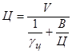
где Ц - расход цемента, т;
V - объем цементационного раствора, м3;
gц - плотность цемента, т/м3.
После определения расхода цемента часть его (до 30 %) может быть заменена песком. Плотность смеси сухих материалов (цемента и песка) в любом соотношении определяют по формуле
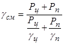
где gсм - плотность смеси сухих материалов, т/м3;
Рц, Рп - массы цемента и песка, т, соответственно;
gп - плотность песка, т/м3.
Значение водотвердого отношения (В/Т) цементно-песчаного раствора определяют по формуле
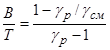
где gр - плотность раствора, т/м3;
gсм - плотность смеси сухих заполнителей, т/м3.
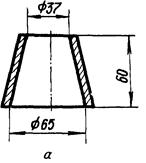
Конус АзНИИ
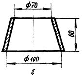
Конус для определения консистенции цементного раствора
Справочное
|
Показатели |
С-251 |
С-683 |
С-683 |
С-317А |
|
Производительность, м3 /ч |
1 |
2 |
4 |
6 |
|
Дальность подачи растворонасоса, м: |
||||
|
по горизонтали |
75 |
50 |
100 |
125 |
|
по вертикали |
25 |
15 |
30 |
40 |
|
Предельное рабочее давление, МПа |
1,0 |
1,0 |
1,5 |
1,5 |
|
Мощность электродвигателя; кВт |
1,7 |
1,7 |
4,5 |
7 |
|
Габаритные размеры, мм: |
||||
|
длина |
1240 |
1160 |
1285 |
1200 |
|
ширина |
445 |
470 |
500 |
500 |
|
высота |
760 |
760 |
805 |
1000 |
|
Масса, кг |
180 |
195 |
254 |
400 |
Рекомендуемое
|
Внутренний диаметр, мм |
Рабочее давление, МПа (кг/см2) |
|||||
|
0,63 (6,3) |
1,0 (10,0) |
1,6 (16,0) |
||||
|
Наружный диаметр |
||||||
|
с комбинированной тканью |
с хлопчатобумажной тканью |
с комбинированной тканью |
с хлопчатобумажной тканью |
с комбинированной тканью |
с хлопчатобумажной тканью |
|
|
40 |
54 |
56 |
57 |
59 |
59 |
65 |
|
50 |
65 |
67 |
67 |
70 |
71 |
78 |
|
63 |
78 |
79 |
82 |
85 |
86 |
83 |
|
Наименование головки |
Обозначение |
Размеры, мм |
|||
|
Рукавная |
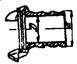 |
D |
19 |
42 |
57 |
|
d |
25 |
50 |
65 |
||
|
Цапковая |
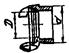 |
d" |
1 |
2 |
21/2 |
|
D |
25 |
43 |
57 |
||
|
Муфтовая |
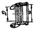 |
d" |
1 |
2 |
21/2 |
|
D |
25 |
43 |
57 |
||
|
Переходная |
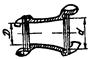 |
D |
43 |
43 |
57 |
|
d |
57 |
69 |
69 |
||
Рекомендуемое
|
Наружный диаметр, мм |
Линейная плотность труб, кг/м, при толщине стенки, мм |
||||||
|
12 |
(13) |
14 |
(15) |
16 |
17 |
18 |
|
|
127 |
34,03 |
36,55 |
39,01 |
41,43 |
43,60 |
46,12 |
48,39 |
|
133 |
35,81 |
38,47 |
41,09 |
43,65 |
46,17 |
48,63 |
51,05 |
|
140 |
37,88 |
40,72 |
43,50 |
46,24 |
48,93 |
51,57 |
54,16 |
|
146 |
39,66 |
42,64 |
45,57 |
48,46 |
51,30 |
54,08 |
56,82 |
|
152 |
41,43 |
44,56 |
47,65 |
50,68 |
53,66 |
56,60 |
59,48 |
|
159 |
43,50 |
46,81 |
50,06 |
53,27 |
56,43 |
59,53 |
62,59 |
|
168 |
46,17 |
49,69 |
53,17 |
56,60 |
59,98 |
63,31 |
66,59 |
|
180 |
49,72 |
53,54 |
57,31 |
61,04 |
64,71 |
68,34 |
71,91 |
|
194 |
53,86 |
58,03 |
62,15 |
66,22 |
70,24 |
74,21 |
78,13 |
|
203 |
56,52 |
60,91 |
65,25 |
69,55 |
73,79 |
77,98 |
82,12 |
|
219 |
61,26 |
66,04 |
70,78 |
75,46 |
80,10 |
84,69 |
89,23 |
|
245 |
68,95 |
74,38 |
79,76 |
85,08 |
90,36 |
95,59 |
100,77 |
|
273 |
77,24 |
83,36 |
89,42 |
95,44 |
101,41 |
107,33 |
113,20 |
Рекомендуемое
Максимальная амплитуда вынуждающей силы, кН................................ 250
Статический момент массы дебалансов, Н·м .......................................... 100
Частота колебаний, Гц................................................................................. 25 и 16
Число дебалансных валов .......................................................................... 4
Мощность электродвигателя, кВт.............................................................. 40
Габариты, мм:
высота............................................................................................... 1650
длина................................................................................................. 1270
ширина.............................................................................................. 800
Общая масса вибропогружателя с основной пригрузкой, кг ................. 2200
СОДЕРЖАНИЕ